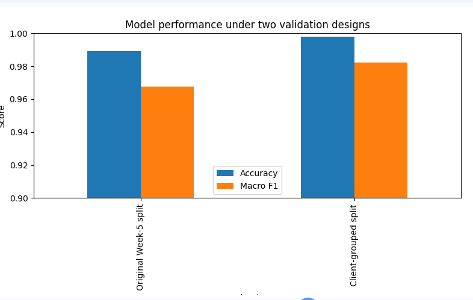

Abstract
This project investigates whether current search-performance signals can be used to prioritize content with potential CTR opportunities. Using anonymized FlyRank warehouse data, I examined Google Search Console impressions, clicks, and average search position and built a position-adjusted CTR baseline that ranks pages with meaningful search visibility but below-benchmark CTR. A Decision Tree model was then used to reproduce this prioritization rule and evaluated using both the original split and a client-grouped split. The model achieved 98.9% accuracy and 96.76% macro F1 on the original evaluation, and 99.79% accuracy and 98.24% macro F1 on the client-grouped evaluation. These results show that the model can reproduce the prioritization rule consistently across held-out clients, but they should not be interpreted as proof of future SEO performance because the target is derived from the same current-period signals used as model inputs. The final output is therefore best treated as a transparent decision-support system for identifying pages that warrant human review.
1. Question
Research question
Can current search-performance signals be used to prioritize content that shows a measurable CTR opportunity, while avoiding a simple global CTR threshold?
Decision supported
The goal is to produce a ranked review queue for content teams. The queue highlights pages with meaningful search visibility and CTR that is weak relative to their observed search position.
2. Data
I used the public-safe FlyRank internship warehouse release and worked primarily with Google Search Console performance data.
The baseline analysis used the March 2026 reporting window. The analysis required usable GSC data, positive impressions, and a non-null average search position.
Rows without usable GSC data were excluded because CTR and position-based opportunity could not be measured reliably for those rows.
Client and content identifiers were retained only for grouping and validation. They were not used as model features.
3. Methodology
Features
The final model uses three current-period search signals:
gsc_impressionsgsc_clicksgsc_avg_position
CTR is calculated as clicks divided by impressions.
Baseline
The baseline divides pages into four position groups: 1–3, 4–10, 11–20, and 21+. An observed CTR benchmark is calculated for each group.
A row receives higher priority when its CTR is below the benchmark for its position and it has meaningful impression volume.
Model
A Decision Tree classifier was used to reproduce the prioritization rule. The model uses impressions, clicks, and average position as its features.
Validation
The model was evaluated using the original evaluation design and a client-grouped split. In the grouped evaluation, the same client could not appear in both training and test data.
Leakage checks
Client and content identifiers were excluded from model features. Target-derived fields such as scores, reason codes, actions, and label fields were also excluded.
Implementation
The analysis was implemented in Python using a reproducible notebook workflow. The complete technical workflow, including data checks, model training, validation, and chart generation, is provided in the accompanying Capstone notebook.
4. Results vs Baseline
The model reproduced the baseline classification with high measured accuracy under both evaluation designs.
Model validation table
| Validation | Accuracy | Macro F1 |
|---|---|---|
| Original split | 98.90% | 96.76% |
| Client-grouped | 99.79% | 98.24% |

Validation comparison
5. Limitations
- The target is derived from the same search-performance signals used as model inputs. Therefore, the high classification scores mainly show that the model can reproduce the prioritization rule.
- The analysis does not establish causality. A low CTR does not prove that a content change will increase clicks.
- Impression volume is an opportunity signal, not evidence that an intervention will succeed.
- Zero CTR observations may reflect measurement, rounding, tracking, or incomplete reporting issues.
- The available performance table did not provide a direct content-age field for the baseline, so content freshness could not be tested as an independent feature.
- The grouped evaluation uses held-out clients, but it is still based on a limited evaluation setup and should not be treated as proof of production performance.
6. Ranked Recommendations
The ranked queue should be used as a review list rather than an automatic instruction to change content.
Start with pages that have meaningful impressions and CTR below the benchmark for their position group.
Check whether zero or unusually low CTR values are genuine before taking action.
Where the CTR signal is reliable, review whether the search-result title and snippet clearly match search intent and page content.
When several pages show similar CTR gaps, give earlier review to pages with greater impression volume.
Any content change should be followed by a new measurement window. The ranking itself should not be treated as evidence that an intervention caused improvement.
7. Artifacts the Paper Embeds
The following artifacts summarize the main evidence used by the analysis and provide a compact view of the decision-support workflow.
Artifact 1 — CTR by Position Bucket
Observed CTR varies by search-position bucket, supporting the use of position-adjusted benchmarks rather than one global CTR threshold.
| Position | Observed CTR |
|---|---|
| 1–3 | 0.003814 |
| 4–10 | 0.003041 |
| 11–20 | 0.003056 |
| 21+ | 0.001262 |
Artifact 2 — Impression-Volume Buckets
Impression volume helps distinguish low-visibility rows from pages with larger observed search exposure.
| Impression bucket | Total impressions |
|---|---|
| <10 | 535,373,900 |
| 10–99 | 548,147,670 |
| 100–999 | 1,616,094,300 |
| 1000+ | 588,796,530 |
Artifact 3 — Model Validation
The same model was compared under the original and client-grouped evaluation designs.
| Validation | Accuracy | Macro F1 |
|---|---|---|
| Original split | 98.90% | 96.76% |
| Client-grouped | 99.79% | 98.24% |
Artifact 4 — Top Recommendation Queue
A public-safe representation of the highest-ranked review recommendations is shown below. Identifiers are intentionally omitted.
| Rank | Action | Reason | Confidence |
|---|---|---|---|
| 1 | Prioritize review | Below-position CTR / zero CTR | Medium |
| 2 | Prioritize review | Below-position CTR / zero CTR | Medium |
| 3 | Prioritize review | Below-position CTR / zero CTR | Medium |
| 4 | Prioritize review | Below-position CTR / zero CTR | Medium |
| 5 | Prioritize review | Below-position CTR / zero CTR | Medium |
8. Acknowledgments & Data Credit
This work was completed as part of the FlyRank ML internship. The analysis uses the public-safe FlyRank internship warehouse provided for the program. Data and methodology are used for educational and decision-support purposes.
Data credit: FlyRank
ML-12 — 5-Minute Demo Outline
Introduce the research question: whether current search-performance signals can be used to prioritize content with potential CTR opportunities. Explain that the goal is decision support rather than predicting future SEO performance.
Show the anonymized FlyRank warehouse data used for the analysis. Explain the March 2026 analysis window and the main GSC fields: impressions, clicks, and average position.
Explain the position-adjusted CTR baseline. Show the four position buckets and explain how CTR benchmarks and impression volume were used to prioritize pages.
Show the Decision Tree features and the validation results. Compare the original evaluation with the client-grouped evaluation.
Show the ranked action queue and explain how high-visibility pages with below-benchmark CTR are prioritized for human review.
Explain that the target is derived from the same current-period signals used as model features, so the high scores demonstrate rule reproduction rather than independent future prediction. Also explain that the analysis does not establish causality.
Conclude that the workflow provides a transparent, interpretable decision-support system for prioritizing potential CTR opportunities.
ML-12 — Social-Post Cut
ML-12 — Employer-Facing Summary
I built an interpretable machine-learning workflow that uses Google Search Console signals to prioritize content with potential CTR opportunities. I developed a position-adjusted baseline, trained a Decision Tree to reproduce the prioritization rule, and evaluated it using both a standard split and a client-grouped validation design. The project strengthened my ability to connect data analysis, machine learning, leakage checking, validation, and practical recommendations into an end-to-end decision-support workflow.